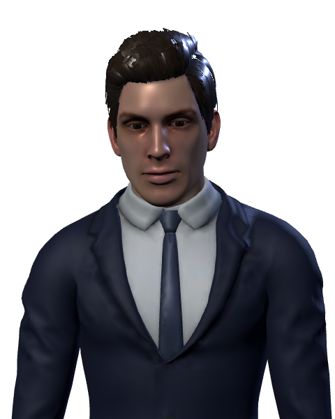
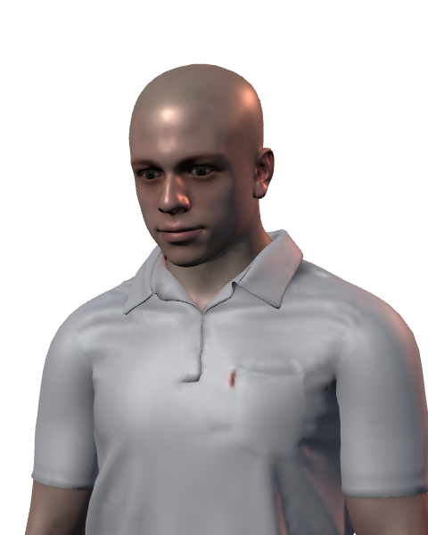
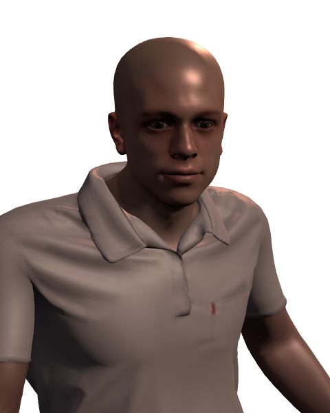
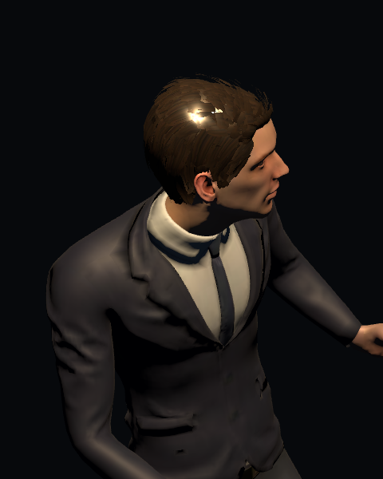
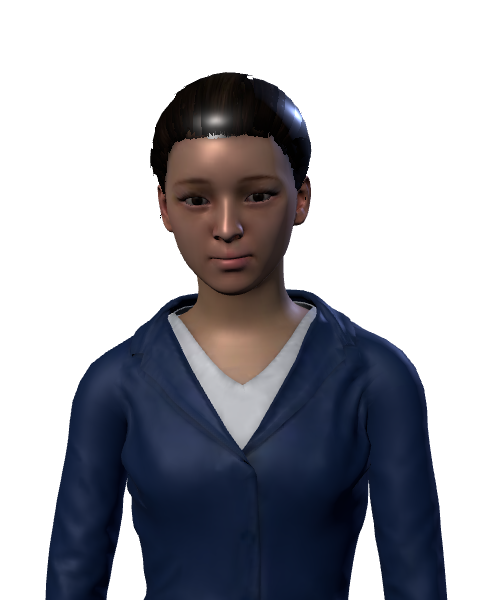
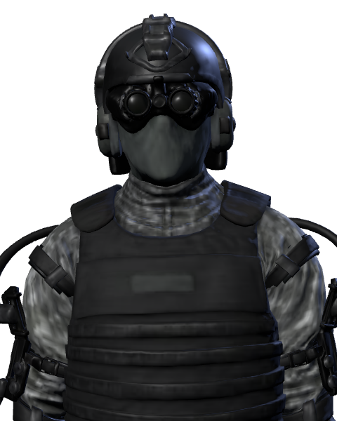
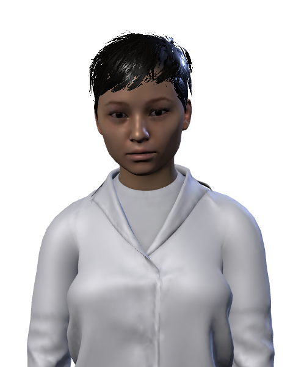

VIEILLE VILLE
PORT
MARCHÉ
PLAN DE LA VILLE
DISPARITIONS AU PORT : L'ENQUÊTE PIÉTINE
MARCHÉ DE NUIT : DES FILLES DISPARUES
AUCUNE PISTE
01

MARKOV
TRAITE
02


SANCTECHAIR
LES FRÈRES · BOUCHERS
03

VOSKO
PASSEUR
04

VERNE
CDT
04

HALDER
CNE
04

ROSSI
LT
05
AUCUNE PHOTO
KESSLER
COLONEL
06
?
???
COMMANDITAIRE
●
CANAL INCONNU · NUMÉRO JETABLE
PROLOGUE
SNIPER